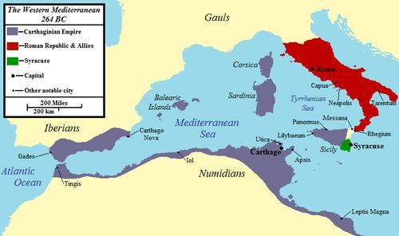
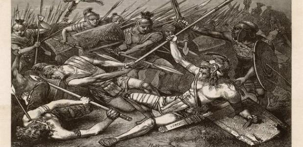

Onstaan conflicten
Een van de grootste vijanden van Rome was Carthago.
Rome heeft daarom ook meerdere oorlogen met Carthago gehad.
Om een beter beeld te krijgen bij het onstaan van deze oorlogen kijken we eerst naar de conflicten tussen de twee grootmachten.
Hieronder zie je een kaart van Carthago (paars) en Rome(rood)

Zoals je kan zien was Carthago veel groter dan Rome. Ook hadden ze meer macht rond het handelen in de Middelandse zee.
Carthago
Carthago was een grootmacht in het westelijke gedeelte van de middelandse zee. De hoofdstad hiervan was Carthago.
Cartago regeerde over wat nu sicilië, noord afrika en de zuid-spaanse kust is.
Carthago was een land dat veel macht had over de handel, maar het had echter geen goed leger.
Ze waren daarom erg afhankelijk van huurlingen. Ze hadden wel toegang tot de Olifant om in een leger te gebruiken.
Hoewel hun landleger minder was, had Carthago wel een goede vloot. Dit was een groot probleem voor de Romeinen tijdens de Punische Oorlogen.
De Punische oorlogen waren drie oorlogen tussen Carthago en Rome.
Eerste Punische Oorlog
De eerste Punische Oorlog was begonnen toen Messina,toen een piratenstad, aan Carthago vroeg of ze konden helpen tegen een aanval van Syracuse.
De Carthagers bleven echter in de stad en de piraten uit Messina vroegen toen om hulp bij de Romeinen.
De romeinen zagen dat Carthago een groot gevaar voor hun was en het incident van Messina was een goede Casus Bellum.
Hierdoor startte de eerste punische oorlog.

Hoewel rome al een goed landleger had, was hun marine zeer klein. Door deze oorlog zagen de Romeinen dat ze hier wat aan moesten verbeteren.
De Carthagers hadden tenslotte een zeer goede marine.
Na hevige gevechten op vooral sicilië, is de eerste oorlog ten einde gekomen, met Rome als overwinnaar.
Carthago, de verliezer, moest Sardinië en Sicilië afstaan aan Rome.
Tweede Punische Oorlog
De Tweede Punische Oorlog was ook de bekenste en belangrijkste oorlog.
In deze oorlog was Rome aan de afgrond gebracht.
De Tweede Punische Oorlog werd vooral uitgevochten op land, maar er is één slag die nog lang is onthouden.
Nadat de bekende Hannibal met zijn leger over de alpen is getrokken, kwam hij aan bij Rome.

Rome had vele legers naar Hannibal gestuurd, één daarvan was bestond uit 8 legioenen.
Deze kwamen in gevecht met Hannibal's troepen in de slag bij Cannae. De romeinen dachten de opperhand te hebben,
maar na een fel gevecht omringde Hannibal's troepen de romeinen, en werd iedereen afgeslacht.
Dit verlies was zeer diep voor het Romeinse Republiek en ze moesten toen een andere tactiek verzinnen.
De nieuwe tactiek werd het veroveren van de Iberische kust, ookwel de spaanse kust.
Na de beslissende overwinning van de Romeinen bij de slag bij Ilipa, staken de romeinen over naar Afrika.
Hier omsingelde de romeinen de Carthagaanse Hoofdstad en Hannibal keerde terug naar Afrika.
Hannibal werd echter verslagen en Carthago gaf zich over, waarmee het einde van de Punische oorlog in zicht kwam.
Derde Punische Oorlog
Na de Tweede Punische oorlog had Carthago alleen nog maar noord-Tunesië.
Carthago mocht ook geen legers meet hebben en zich niet bemoeien met haar buurlanden.
Carthago ging echter toch ten oorlog met haar voormalige bondgenoot, Numidië.
Rome had dit juist verboden en verklaarde de oorlog aan Carthago.
Nadat Rome drie jaar lang de stad Carthago had belegerd, werd deze uiteindelijk platgebrand.
Hiermee kwam een eind aan Carthago en aan de Derde Punische Oorlgo.